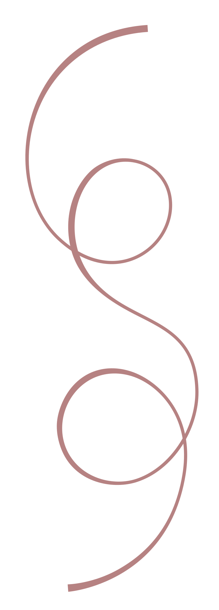
O app que te acompanha e orienta em cada decisão do seu casamento.
Nunca mais se sinta perdida! Na Jornada do Sim você é conduzida pelas etapas certas, na ordem certa e com apoio para tomar cada decisão.
Ver planos- ✓ Acesso imediato
- ✓ +450 noivas atendidas
- ✓ Inclui Gab.IA 24h
Simples como dizer sim
Você não precisa aprender tudo sobre casamento. Basta deixar que a Jornada do Sim te mostre o próximo passo e te ajude nas suas decisões.
Conte sobre o seu casamento
Você compartilha sua data, orçamento e outros detalhes do seu sonho.
Receba um plano personalizado
A Jornada do Sim personaliza todo o seu planejamento, mostrando o que fazer, quando e como decidir.
Desfrute dos preparativos
Siga cada etapa com o apoio da Gab.IA, vídeos e ferramentas inteligentes.
Você nunca mais vai precisar se perguntar…
- Por onde eu começo?
- Será que já era para eu ter contratado isso?
- Será que estou esquecendo alguma coisa importante?
- Será que escolhi o fornecedor certo?
- Será que eu estou pagando mais caro do que deveria?
- Será que combina?
- O que eu devo perguntar na reunião?
Demonstração da plataforma
Vídeo em breveTransforme a ansiedade e o medo de errar em uma jornada leve, organizada e tranquila.
Com a Jornada do Sim você não perde horas pesquisando, não esquece detalhes importantes e nem toma decisões no escuro. A plataforma sempre te mostra o próximo passo, orienta cada decisão e acompanha você até o grande dia.
Checklist inteligente
Checklist inteligente personalizado para o seu casamento. Tarefas organizadas mês a mês até o grande dia.
Orientação a cada decisão
Cada tarefa decisiva vem acompanhada de uma orientação prática da assessora em vídeo para te ajudar a decidir com segurança.
Gab.IA, sua assessora 24h
Tire dúvidas, peça orientações e receba ajuda em cada etapa do planejamento, disponível sempre que precisar.
Financeiro sem susto
Veja seu orçamento distribuído por categoria e enxergue o todo antes de começar a contratar. Acompanhe cada gasto, parcelas e comprovantes em tempo real, tudo em um só lugar.
Fornecedores organizados
Compare orçamentos, organize contratos e reuniões. Saiba exatamente o que perguntar em cada reunião, antes e depois de contratar.
Lista de Convidados e RSVP
Crie seu save the date com a Gab.IA, organize suas listas A e B, confirme presenças (RSVP), mapeie mesas e ajuste as quantidades em tempo real.
Análise de contratos
Envie os contratos dos seus fornecedores e a Gab.IA Contratos te ajuda a entender cláusulas, prazos e pontos de atenção antes de assinar.
Agenda inteligente
Tenha todas as tarefas, compromissos e pagamentos organizados no mesmo calendário. Receba lembretes e nunca perca um prazo importante.
Calculadora inteligente
Calcule doces, bebidas, lembrancinhas e outros itens na quantidade ideal para seus convidados.
Moodboard de inspirações
Mais coerência e harmonia em todas as escolhas do seu casamento. Reúna suas inspirações com a ajuda do nosso Atalho Criativo e crie moodboards personalizados para compartilhar com seus fornecedores.
Trilha Sonora da Cerimônia
Encontre inspirações de músicas para a sua cerimônia em playlists cuidadosamente selecionadas.
Programação completa do Grande Dia
Da preparação ao fim da festa, receba o roteiro da cerimônia, o cronograma completo do dia e os documentos de coordenação prontos para compartilhar com sua cerimonialista.
Gab.IA Casa Nova
Comece a vida no novo lar com mais praticidade: enxoval completo, primeiras compras, receitas e dicas para a rotina.
Acesso próprio para noivo e assessoria
Convide seu noivo e sua assessora para acompanharem o planejamento com você. Cada um tem seu próprio login e acesso às informações do casamento.
Casais que já viveram essa jornada
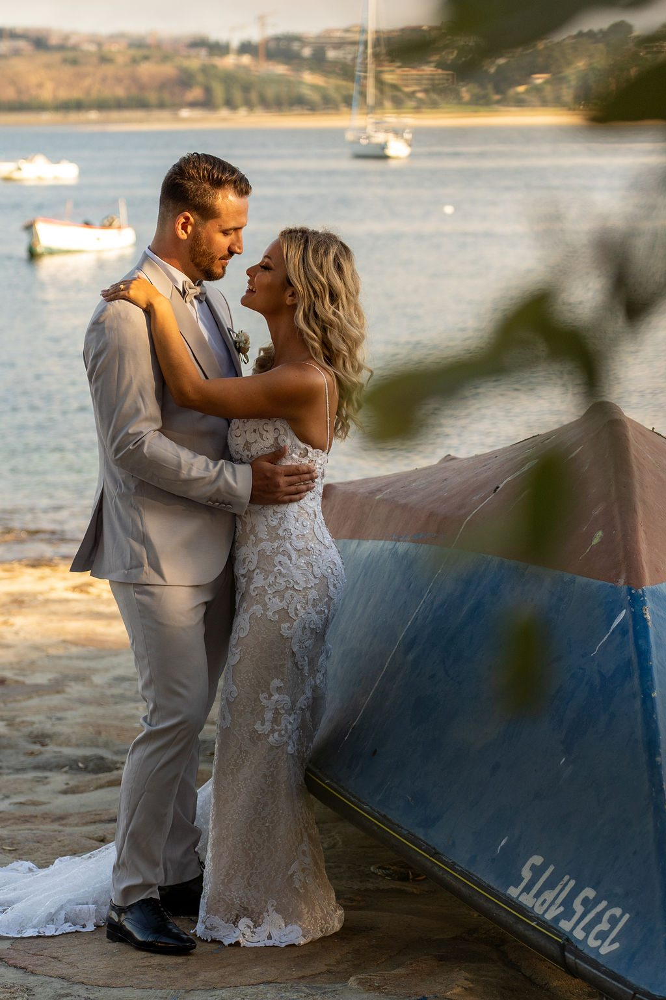
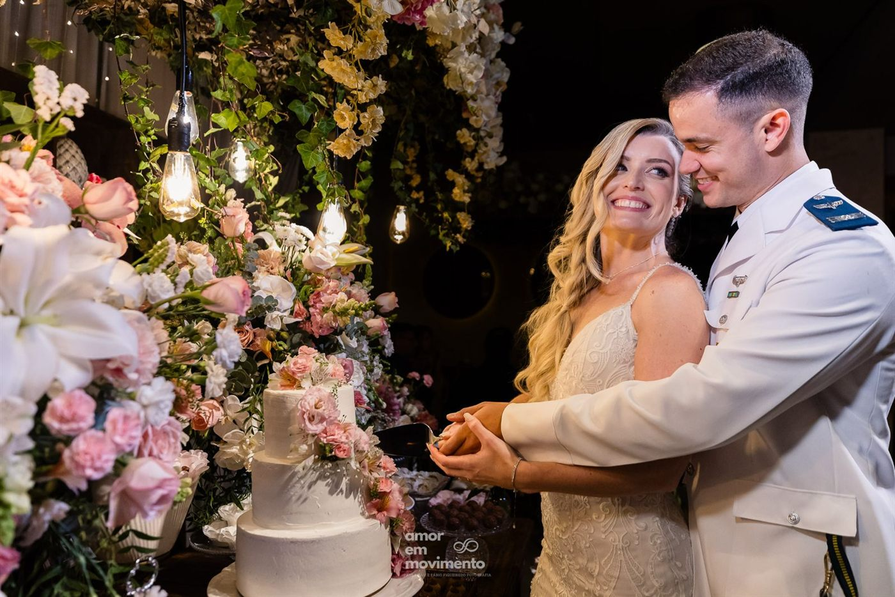
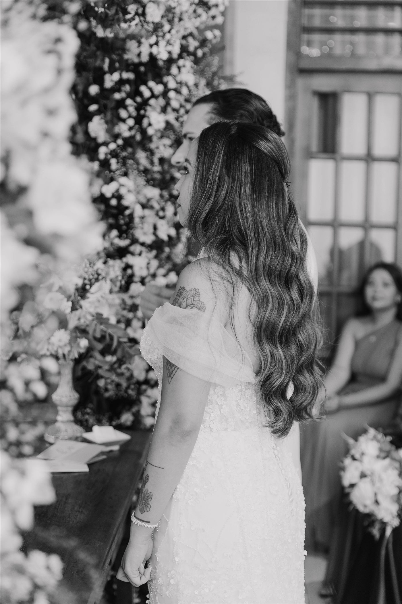
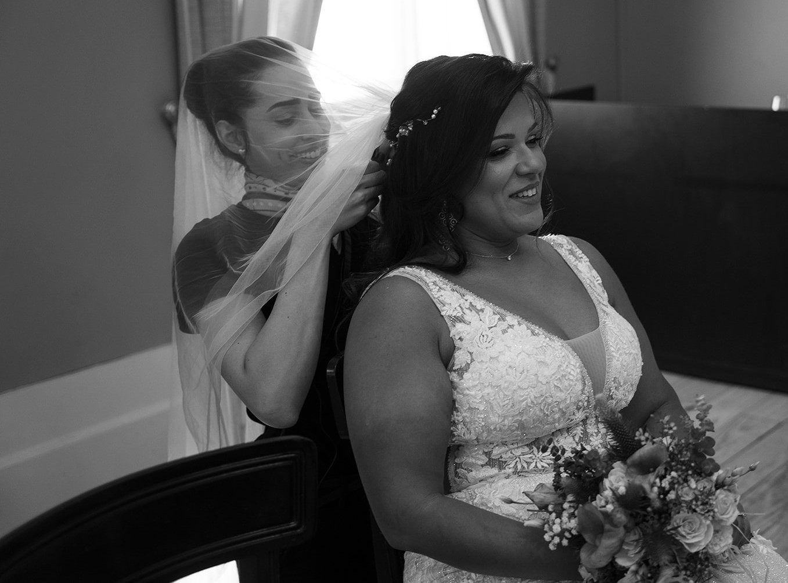
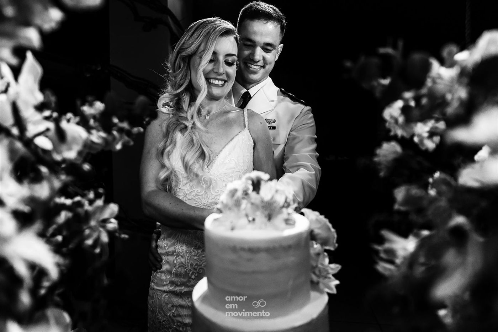
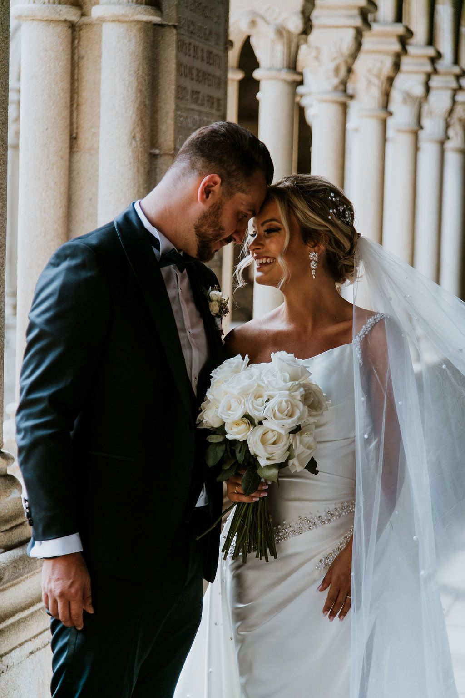
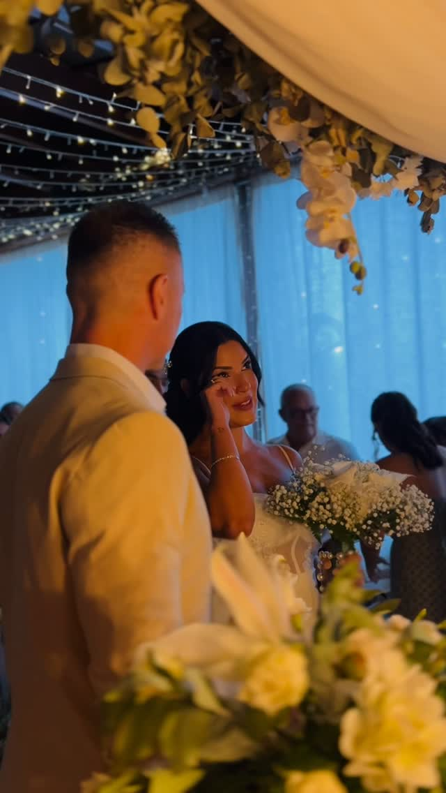
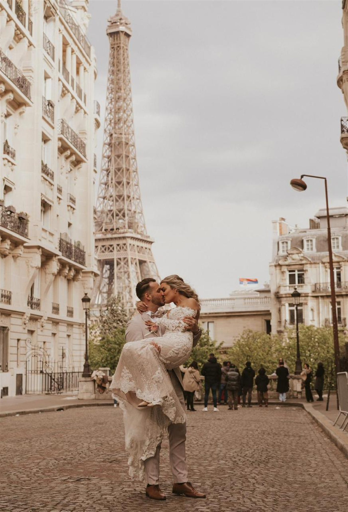
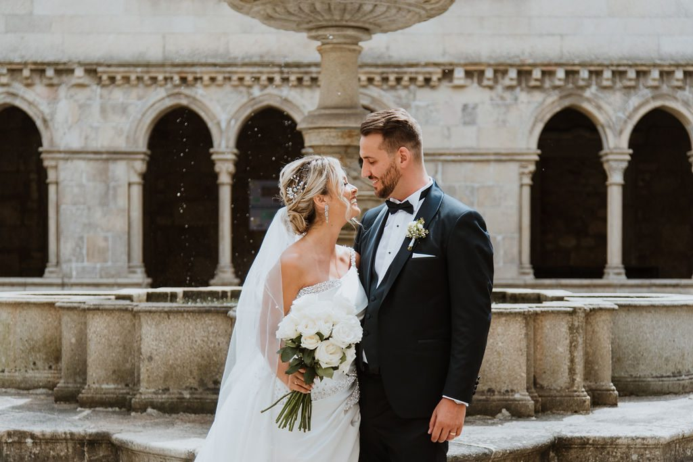
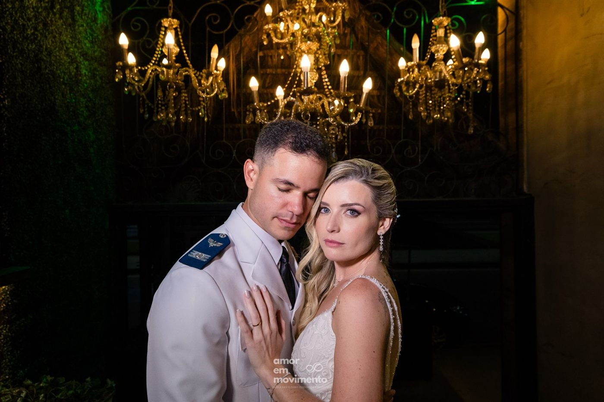
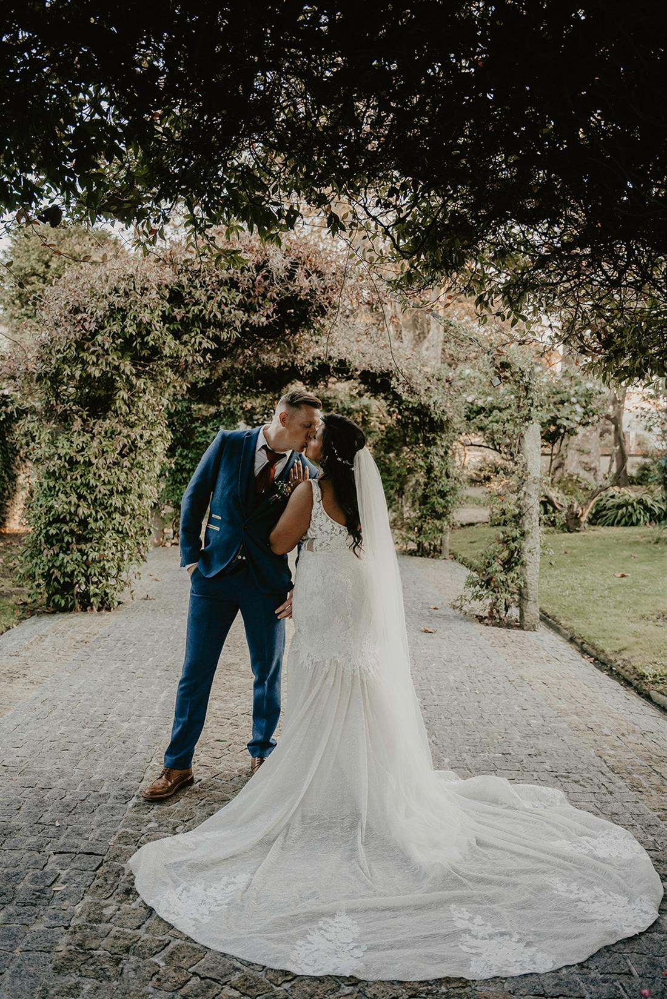
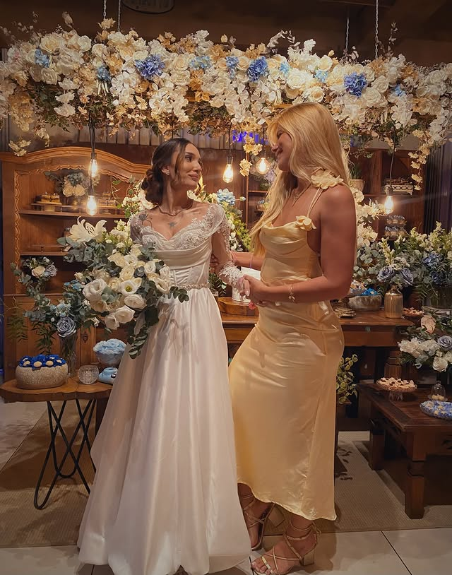
Nenhuma noiva sonha em passar meses preocupada.
Ela sonha em viver cada escolha com entusiasmo, dividir esse momento com quem ama e chegar ao altar com a sensação de que valeu a pena.
Depois de acompanhar centenas de casais de diferentes partes do mundo, percebi que o maior desafio nunca foi escolher flores, fornecedores ou o vestido. Era lidar com a insegurança de não saber por onde começar e com o medo de esquecer algo importante.
Foi justamente para mudar essa experiência que criei a Jornada do Sim.
Aqui, tudo o que aprendi em mais de nove anos assessorando casamentos e como sócia de um espaço de eventos foi transformado em um caminho simples, organizado e acolhedor, para que você tenha mais confiança em cada decisão e mais tranquilidade para viver aquilo que realmente importa.
No fim das contas, meu trabalho nunca foi apenas organizar casamentos. Sempre foi ajudar casais a viverem esse capítulo com mais leveza e segurança.
Brasil e Portugal
"A forma como você vive a jornada transforma a forma como você vive o grande dia."
— Gabriella Batista
Casais que inspiram a Jornada do Sim
Alguns relatos de quem já viveu a experiência de um planejamento guiado, organizado, com mais clareza e menos estresse.
Oi Gabi! Nossa, nós estamos sem palavras!!! Foi tudo incrível, sensacional e inesquecível! Todos os convidados estão vindo elogiar tudo! Nós só temos a agradecer, não mudaríamos nada. Foi tudo perfeito do jeitinho que pensamos.
Ana e Pedro
Oi Gabi! A gente quer agradecer, sem vocês nada disso teria acontecido. A sua organização, seu planejamento do início ao fim foi impecável! Agradecemos por todo profissionalismo, muito obrigada mais uma vez!
Sanny e Daniel
Gabriella, SEM PALAVRAS! A gente tá no céu, foi melhor do que pensamos e idealizamos! Eu vou sentir saudade desse dia pra sempre, foi perfeito! Muito obrigada pelo carinho, por toda atenção, por deixar a gente seguro, vocês sabem o que estão fazendo!
Olívia e Luiz
Fiquei bastante tempo pensando no que iria escrever, porque eu tô sem palavras! Você entendeu todas as minhas questões, meus desejos e transformou o sonho em realidade. Realmente captou muito bem nossa essência como casal. Muito obrigado por tudo!
Tessy e Bill
A Gabi é maravilhosa, juro! Um dos motivos de ter fechado foi porque sou uma mulher muito ocupada. Ela passa segurança pra gente, profissionalismo! Foi uma grata surpresa, sempre atenciosa, impecável! A gente tava esperando uma coisa boa, mas superou!
Kathleen e Christopher
Gabi foi simplesmente maravilhosa! Sensível, paciente e atenta a cada detalhe. Ela não só entendeu tudo o que eu queria, mas também captou o que eu nem sabia que queria, transformando tudo em uma celebração absolutamente inesquecível. Muito obrigada!
Carol e Fernando
Fiquei encantada com o acolhimento e cuidado comigo e meu noivo. As reuniões com a Gabi foram essenciais, ela realmente sabe o que está fazendo e como fazer. Um trabalho de excelência surreal! Sempre que lembrar do meu casamento vou lembrar que tudo foi perfeito.
Raquel e Leonardo
Gabriella foi impecável! Ela presta atenção em cada mínimo detalhe, que muitos a gente nem fazia ideia que tinha que resolver.
Mellina
Toda a organização do casamento com a Gabi foi impecável. Atenta a TODOS os detalhes, desde a organização das mesas até a decoração. A nossa decoração ficou muito além das nossas expectativas! Recomendamos muito!
Bruna
Vocês são sensacionais, cada um de vocês. Mas óbvio que não posso deixar de mencionar nossa cerimonialista paciente e querida Gabriella! Nosso coração é só gratidão! Nunca vamos esquecer!
Karolyne
Eu não tenho palavras para agradecer, do fundo do coração. Sem dúvidas foi o dia mais feliz da minha vida. Todos os convidados elogiaram muito. Tudo saiu perfeito. Com toda certeza foi o melhor investimento que fizemos na nossa vida!
Natália
Desde o primeiro contato, o atendimento foi simplesmente impecável. Conduzido com muito cuidado, atenção e profissionalismo. Muito mais do que um serviço: entrega amor, cuidado e um atendimento personalizado. Indicamos MUITO, de olhos fechados!
Bia
Obrigada Gabriella! Sua experiência e atenção aos detalhes fizeram toda diferença!
Gy Muniz
A Gaby é maravilhosa, como disse quando entrei no salão lembrei dela, como se ela estivesse ali pondo a mão em cada detalhe! Obrigada por tanto! Foi incrível!
Hosana
Tudo feito com muito carinho, dedicação e todo cuidado do mundo, com amor em cada detalhe. Tivemos uma ótima experiência do início ao fim. Estamos muito encantadas e ainda em êxtase.
Mayla e Amanda
Desde o primeiro momento, todo o andamento até o grande dia foi tão organizado que ficamos seguros e com a certeza que daria certo. Confiamos de olhos fechados e foi muito além das nossas expectativas.
Nathália
Nosso sentimento é de gratidão e felicidade pelo atendimento do início ao fim. Todos os detalhes respeitados com carinho e muito capricho. Não poderíamos ter feito uma escolha melhor. Nosso muito obrigado!
Marco
A Gabi foi incrível em suas orientações e ajustes de cada detalhe. Vocês fazem parte da nossa história! Com muito carinho agradecemos todo profissionalismo e dedicação. Muito obrigado!
Lygia e Edson
Desde o primeiro contato e toda assessoria que Gabi deu (super fofa e paciente!), demonstram que amam o que fazem! Tornou nosso dia mais especial do que já era!
Priscila
Vocês me proporcionaram um serviço acima da excelência! Foi tudo perfeito e além do que eu imaginava. Casaria 30x com vocês. Minha mais sincera e eterna gratidão por ter feito meu dia inesquecível!
Kauanna
Gente, o que é a Gabi?! Eu estou extasiada. Foi tudo tão perfeito, tão tranquilo. Faltam palavras pra agradecer, mas sobra amor e gratidão. Muito feliz por saber que a minha escolha foi a melhor escolha.
Ethyenne e Marcelo
"Uma das coisas que mais quero agradecer é por você ter feito minha esposa conseguir relaxar e aproveitar o dia dela."
Escolha o plano ideal para a sua jornada
Você tem acesso a todos os recursos da Jornada do Sim em qualquer plano. Escolha apenas o período de acesso ideal para o seu casamento. Pagamento único, sem mensalidade recorrente.
6 meses
- Cronograma personalizado mês a mês
- Gab.IA, sua assessora 24h
- Orientação em vídeo para cada tarefa decisiva
- Planejamento e controle financeiro
- Fornecedores: orçamentos, contratos e reuniões
- Convidados: save the date, listas A e B, RSVP, mapa de mesas
- Agenda inteligente com lembretes
- Análise de contratos pela Gab.IA
- Calculadora inteligente
- Moodboards de inspiração
- Programação completa do Grande Dia
- Acesso próprio para noivo e assessoria
- + Trilha Sonora da Cerimônia
- + Gab.IA Casa Nova
- + Comunidade exclusiva
- + Atualizações durante todo o plano
12 meses
- Cronograma personalizado mês a mês
- Gab.IA, sua assessora 24h
- Orientação em vídeo para cada tarefa decisiva
- Planejamento e controle financeiro
- Fornecedores: orçamentos, contratos e reuniões
- Convidados: save the date, listas A e B, RSVP, mapa de mesas
- Agenda inteligente com lembretes
- Análise de contratos pela Gab.IA
- Calculadora inteligente
- Moodboards de inspiração
- Programação completa do Grande Dia
- Acesso próprio para noivo e assessoria
- + Trilha Sonora da Cerimônia
- + Gab.IA Casa Nova
- + Comunidade exclusiva
- + Atualizações durante todo o plano
24 meses
- Cronograma personalizado mês a mês
- Gab.IA, sua assessora 24h
- Orientação em vídeo para cada tarefa decisiva
- Planejamento e controle financeiro
- Fornecedores: orçamentos, contratos e reuniões
- Convidados: save the date, listas A e B, RSVP, mapa de mesas
- Agenda inteligente com lembretes
- Análise de contratos pela Gab.IA
- Calculadora inteligente
- Moodboards de inspiração
- Programação completa do Grande Dia
- Acesso próprio para noivo e assessoria
- + Trilha Sonora da Cerimônia
- + Gab.IA Casa Nova
- + Comunidade exclusiva
- + Atualizações durante todo o plano
Perguntas que quase toda noiva faz
A Jornada do Sim substitui uma assessora de casamento?
A Jornada do Sim foi desenvolvida com base na experiência da Gabriella Batista e oferece orientação especializada para todas as etapas do planejamento. Ela não substitui uma assessora presencial no dia do casamento, mas te acompanha em tudo que vem antes. Com ou sem assessoria, você pode planejar seu casamento com a Jornada do Sim.
Tenho alguma garantia?
Sim. Você tem 7 dias de garantia: se não for pra você, é só pedir e devolvemos o seu dinheiro.
Posso renovar ou fazer upgrade do meu plano?
Sim. Os planos têm período fechado e não são renovados automaticamente. Sempre que desejar, você poderá fazer upgrade ou renovar o seu acesso pela sua conta. Além disso, enviaremos um e-mail de lembrete antes do vencimento do plano para que você não seja pega de surpresa.
É difícil usar?
O aplicativo é intuitivo e foi pensado exatamente para noivas que não têm experiência com casamentos ou tecnologia.
Como faço para acessar o aplicativo?
O acesso é liberado imediatamente após a confirmação do pagamento. Acesse pelo navegador no celular, tablet ou computador com seu e-mail e senha. Se preferir, baixe o aplicativo Jornada do Sim, disponível para Android na Play Store.
O aplicativo funciona para qualquer tipo e prazo de casamento?
Sim! Civil, religioso, na praia, no campo ou no salão. Grande ou íntimo. O aplicativo se adapta ao perfil e data do seu casamento, independente do prazo que tenha.
O casamento dos seus sonhos começa nas decisões de hoje
Quanto antes você começar, mais tempo terá para planejar com calma, fazer boas escolhas, economizar e aproveitar o noivado sem a sensação de estar perdida ou atrasada.
Começar agora →